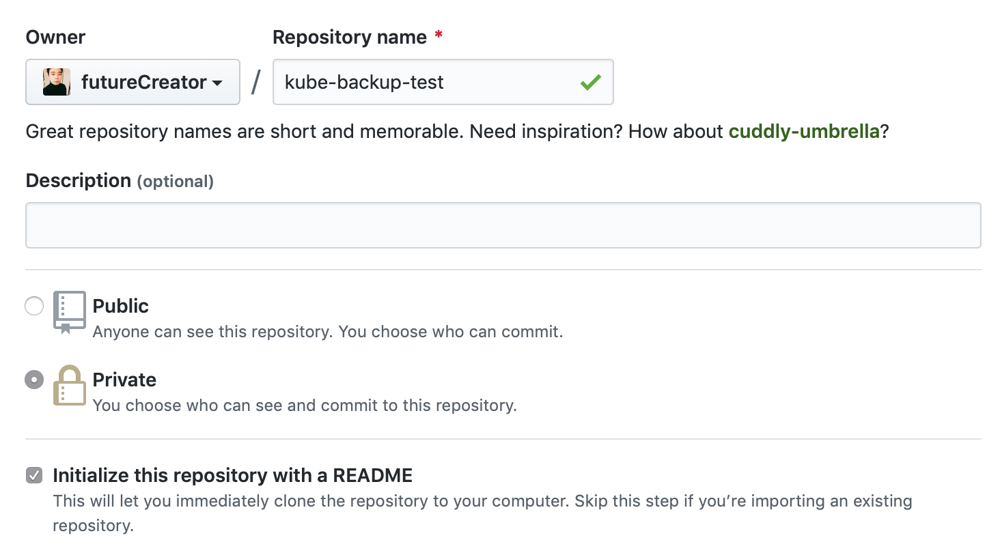
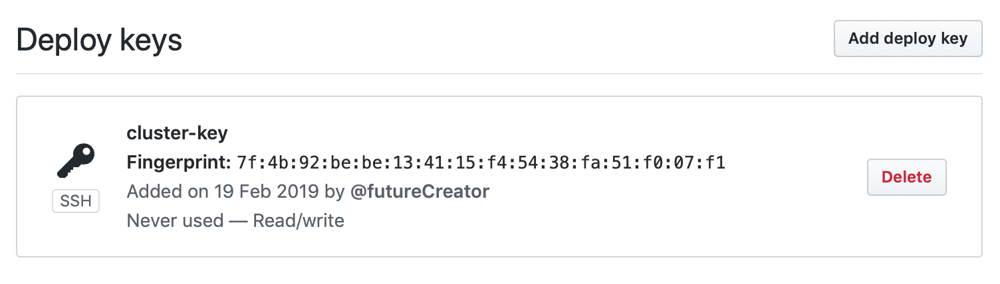
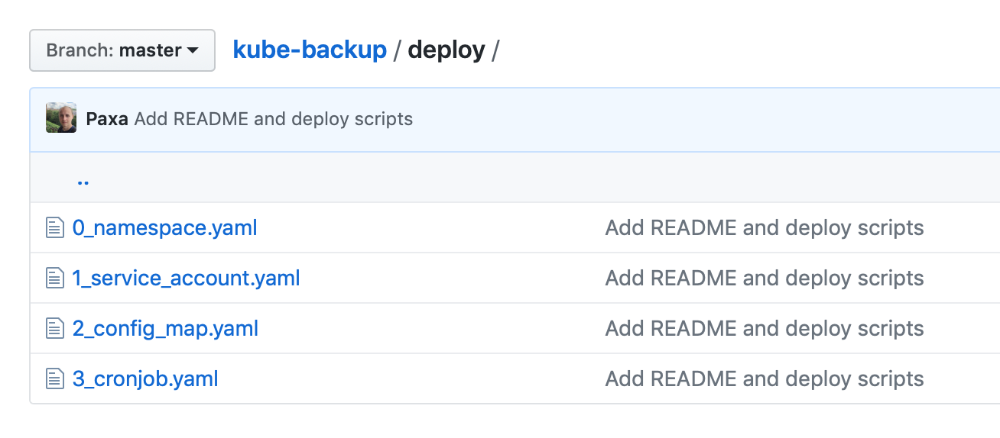
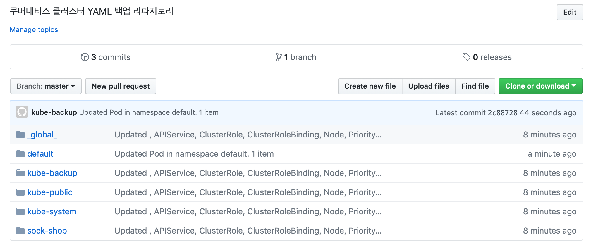
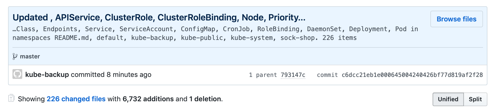
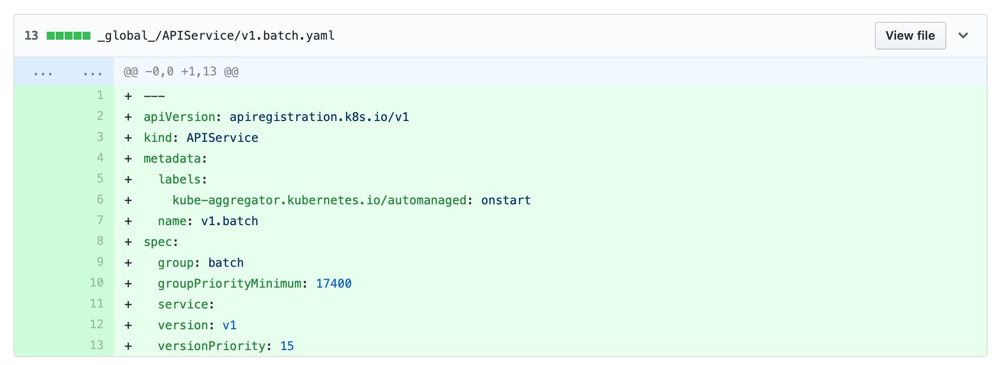

쿠버네티스(Kubernetes)에서 시시각각으로 변하는 오브젝트의 상태를 저장하고 관리하려면 어떻게 해야 할까요? 가장 먼저 생각할 수 있는 방법은 YAML 파일로 export 해서 저장하는 것입니다.
1 | # e.g. kube-system Namespace 의 모든 Pod 을 YAML 형태로 출력하기 |
Pod 뿐만 아니라 Deployment, Service, ConfigMap 등 모든 Namespace 의 다양한 오브젝트를 YAML 형태로 출력할 수 있습니다. YAML 은 복잡하지 않고 데이터를 체계적으로 보여주기 때문에 읽기 쉬운 장점이 있습니다. 이를 주기적으로 수행하도록 쉘 스크립트를 짜서 관리할 수도 있을텐데요. YAML 파일을 만들기는 쉽지만 관리가 어렵고, 문제가 생겼을 시에 활용하기 어려운 단점이 있습니다.
이번 포스트에서는 이런 문제를 해결할 수 있는 오픈 소스를 소개하려고 합니다.
Kube-backup
Kube-backup 은 Git과 CronJob 을 이용해 쿠버네티스 오브젝트를 YAML 파일로 백업하는 오픈소스입니다.
이 오픈소스의 핵심은 다음과 같습니다.
- 설정한 쿠버네티스 오브젝트를 YAML 파일로 백업
- 지정한 Git의 브랜치로 Push
- CronJob 형태로 주기적 수행

설정을 이용해 백업할 오브젝트의 선별이 쉽고, Namespace 와 오브젝트 별로 체계적인 분류가 가능합니다.

또한 Git 을 이용해서 변경 이력을 관리하기가 쉽고 문제가 생기는 부분을 쉽게 파악할 수 있습니다. 또한 변경이 있는 부분만 Push 하기 때문에 관리가 용이하고, 시스템 버전에 따라서 저장소 또는 브랜치를 분리해서 관리할 수 있습니다.
물론 위 그림은 간단한 클러스터의 경우이고, 대규모 운영 클러스터의 경우에는 백업할 내용이 많아 적절한 설정이 필요합니다.
클러스터 준비하기
먼저 설치할 클러스터가 필요합니다. 이번 포스트에서는 쿠버네티스 클러스터가 있다는 전제 하에 진행됩니다. 쿠버네티스 클러스터가 필요하다면 다음 포스트를 참고하세요.
개발자를 위한 쿠버네티스(Kubernetes) 클러스터 구성하기(Kubeadm, GCE, CentOS)사전 준비하기
그럼 실제 클러스터에 배포해보겠습니다. GitHub 리파지토리에 있는 배포용 YAML 을 이용하면 쉽게 배포가 가능합니다. 그 전에 앞서 몇 가지 설정이 필요합니다.

먼저 백업 YAML 파일을 저장할 라피지토리가 필요하겠죠? GitHub이나 GitLab 등 원하는 리파지토리를 생성합니다. 백업용이니까 Private 리파지토리가 좋겠습니다. 이번 포스트에는 GitHub 기준으로 진행합니다.
그리고 기본 설정인 master 브랜치가 필요하므로 README.md 파일로 초기화해서 master 브랜치를 만들어줍니다.
이렇게 프로그램 상에서 자동으로 Git 에 접속하는 경우에는 https 대신 ssh 방식을 사용합니다. https 방식은 보안을 위해 계정 정보를 직접 입력해야 하기 때문에 Key 를 이용해 인증을 할 수 있는 ssh방식을 사용합니다.
이를 위해서 먼저 포트가 열려 있어야 합니다. 운영 환경의 경우에는 방화벽이 있을 수 있으므로 사전에 22 포트를 오픈합니다.
그리고 GitHub 에 접속할 SSH Key 를 생성합니다. GitHub 에서는 다른 리파지토리 또는 유저가 사용하는 Key 를 사용할 수 없기 때문에 새로 Key 를 생성합니다.
1 | ssh-keygen -f ./new-key |
그러면 Private Key 와 Public Key 한 쌍이 생성됩니다.

이제 GitHub 의 Settings > Deploy Keys 에 생성한 Public Key 를 등록합니다.

배포용 YAML 파일을 내려받습니다. 또는 포스트에 내용을 복사해서 사용합니다.
설치하기
배포용 YAML 파일명 앞에 붙어있는 숫자 순서대로 설치를 진행하면 됩니다.
Namespace
0_namespace.yaml 파일로 Namespace kube-backup 을 생성합니다.
1 | apiVersion: v1 |
1 | kubectl apply -f 0_namespace.yaml |
RBAC
그리고 1_service_account.yaml 파일로 ServiceAccount 를 생성하고 Role 을 설정합니다.
1 | apiVersion: v1 |
1 | kubectl apply -f 1_service_account.yaml |
ConfigMap
다음으로 2_config_map.yaml에 위에서 만든 SSH key 를 추가합니다. 해당 ConfigMap 은 Volume 으로 마운트되어 컨테이너에서 Git Clone 및 Push 할 때 사용됩니다.
1 | apiVersion: v1 |
2_config_map.yaml 파일을 이용해 ConfigMap 을 생성합니다.
1 | kubectl apply -f 2_config_map.yaml |
CronJob
이제 3_cronjob.yaml를 수정해 백업을 수행할 CronJob 을 만들어봅시다.
먼저 해당 CronJob 의 스케쥴을 원하는 만큼 cron 형태로 수정합니다.
1 | spec: |
여기서 주의할 점은 특정 시각을 cron으로 설정하는 경우는 UTC 기준으로 설정해야 합니다.
1 | # e.g. 매일 오전 1시에 백업 수행 |
다음으로 GIT_REPO에 백업할 저장소 위치를 SSH 형식으로 추가합니다.
1 | env: |
Custom Resource 는 따로 이름을 추가해줘야 합니다. 다음 명령어로 Custom Resources 를 조회합니다.[1]
1 | kubectl get crd -o json | jq -r '.items | (.[] | [.spec.names.singular, .spec.group, .spec.scope]) | @tsv' |
출력 결과를 보면 세 번째 열의 항목이 Namespaced 와 Cluster 로 나뉘는데 이에 맞춰서 EXTRA_RESOURCES 와 EXTRA_GLOBAL_RESOURCES 로 나눠서 추가합니다.
1 | env: |
Commit 에 사용할 타임존을 설정합니다.
1 | env: |
여기까지 작성한 CronJob의 예시입니다.
1 | apiVersion: batch/v1beta1 |
테스트 시에는 Pod 으로 생성하면 편리합니다.
1 | apiVersion: v1 |
3_cronjob.yaml 파일로 CronJob 을 생성합니다.
1 | kubectl apply -f 3_cronjob.yaml |
확인하기
설정한 시간마다 Job 과 Pod 이 생성되고 작업이 수행되는 것을 확인할 수 있습니다.
1 | kubectl get all -n kube-backup |
GitHub에서 Commit 내역을 확인할 수 있습니다.


Commit 상세 내역에서 변경 사항을 확인할 수 있습니다.

추가 설정하기
필요한 경우 환경변수(env)에 설정을 추가할 수 있습니다.
| 항목 | 내용 |
|---|---|
| SKIP_NAMESPACES | 특정 네임스페이스 제외 |
| SKIP_GLOBAL_RESOURCES | 특정 글로벌 리소스 제외 |
| SKIP_RESOURCES | 특정 리소스 제외 |
| SKIP_OBJECTS | 특정 오브젝트 제외 |
| ONLY_NAMESPACES | 특정 네임스페이스의 항목만 관리(whitelist) |
| GIT_USER | 기본은 kube-backup |
| GIT_EMAIL | 기본은 kube-backup@$(HOSTNAME) |
| GIT_BRANCH | 기본은 master 브랜치 |
이 외에도 Grafana 의 Dashboard 및 설정을 백업하기 위한 옵션도 있습니다. 백업 내용은 _grafana_ 폴더에 저장됩니다.
| 항목 | 내용 |
|---|---|
| GRAFANA_URL | Grafana 의 URL |
| GRAFANA_TOKEN | Grafana API Key |
API Key 는 Grafana 의 Configuration > API Keys 에서 Admin 권한으로 생성하면 됩니다.
참고
세부 내용은 다음 링크를 참고하세요.
Related Posts
- 개발자를 위한 쿠버네티스(Kubernetes) 클러스터 구성하기(Kubeadm, GCE, CentOS)
- 스프링 부트 컨테이너와 CI/CD 환경 구성하기
- 도커 Docker 기초 확실히 다지기
- 개발자를 위한 인프라 기초 총정리
- 1.jq 설치 안내 https://zetawiki.com/wiki/리눅스_jq_다운로드_설치 ↩